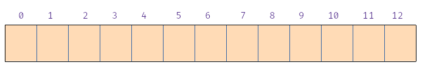

Ejercicio - Análisis de coste en el caso peor de tablas hash
Partimos de una tabla hash con N = 13. Es decir, con 13 cajones. La tabla hash es abierta. Es decir, cada cajón puede tener cero, una o más entradas.

Supongamos que queremos insertar claves de tipo Punto, donde Punto es un tipo de datos definido del siguiente modo:
struct Punto {
int x;
int y;
};
Supongamos la siguiente función hash que transforma objetos p de tipo Punto a números enteros:
De nuevo, comenzamos con una tabla hash abierta con 13 cajones, todos vacíos:
Ahora supongamos la siguiente función hash:
Una pregunta sobre el coste en tiempo, suponiendo que utilizamos esta última función hash:
La función hash anterior es nefasta. Junta todas las claves en los cajones 0 y 1, quedando el resto de cajones vacíos. Vamos a probar con otra función distinta. Suponemos, en este caso, que N = 10:

De nuevo, consideramos la clase Punto, pero con la siguiente función hash:
Vemos que la función hash h definida mediante es mejor que la anterior, pero aún deja la mitad de los cajones vacíos.
Una función hash es mejor cuanto más uniformemente reparta las claves entre los distintos cajones. Normalmente no conocemos de antemano las claves que insertamos en la tabla, pero si consideramos que la clave a insertar k es una variable aleatoria, una función hash es "buena" si todos los cajones de la tabla tienen la misma probabilidad de acoger esa clave. Es decir, si h(k) tiene una distribución de probabilidad uniforme.
A esta propiedad se le conoce como dispersión uniforme.
A partir de ahora vamos a suponer que nuestra función hash es "buena", en el sentido en el que cumple esta propiedad de dispersión uniforme. Ahora vamos a ver cómo influye el tamaño de la tabla en la eficiencia:
Supongamos que tenemos dos tablas T1 y T2. La primera de ellas tiene 50 cajones. La segunda de ellas tiene 100 cajones. Ahora insertamos 70 claves en cada una de ellas y, tras esto, queremos acceder al valor asociado a una de ellas ¿Cuál de las dos tablas tiene más probabilidad de proporcionar un acceso más eficiente?
Concluyendo, hemos visto que hay varios factores que influyen en la rapidez de las operaciones en una tabla hash.
-
La función hash que se utilice. Cuanto más uniformemente distribuya las claves en los distintos cajones, mejor.
-
El número de cajones en relación al número de entradas en la tabla. Esto tiene relación con el concepto de factor de carga, que se introducirá en el siguiente vídeo.